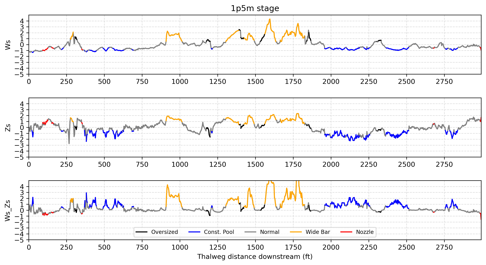
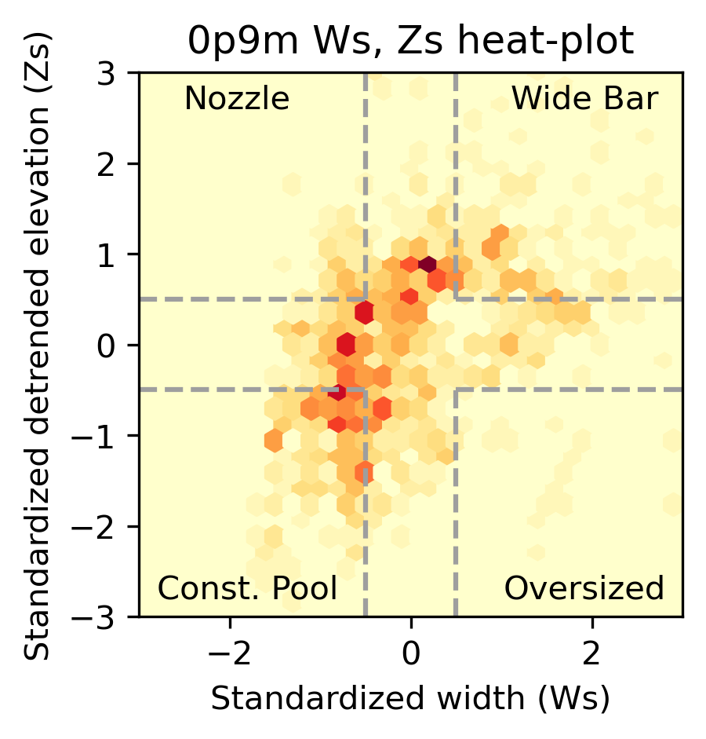
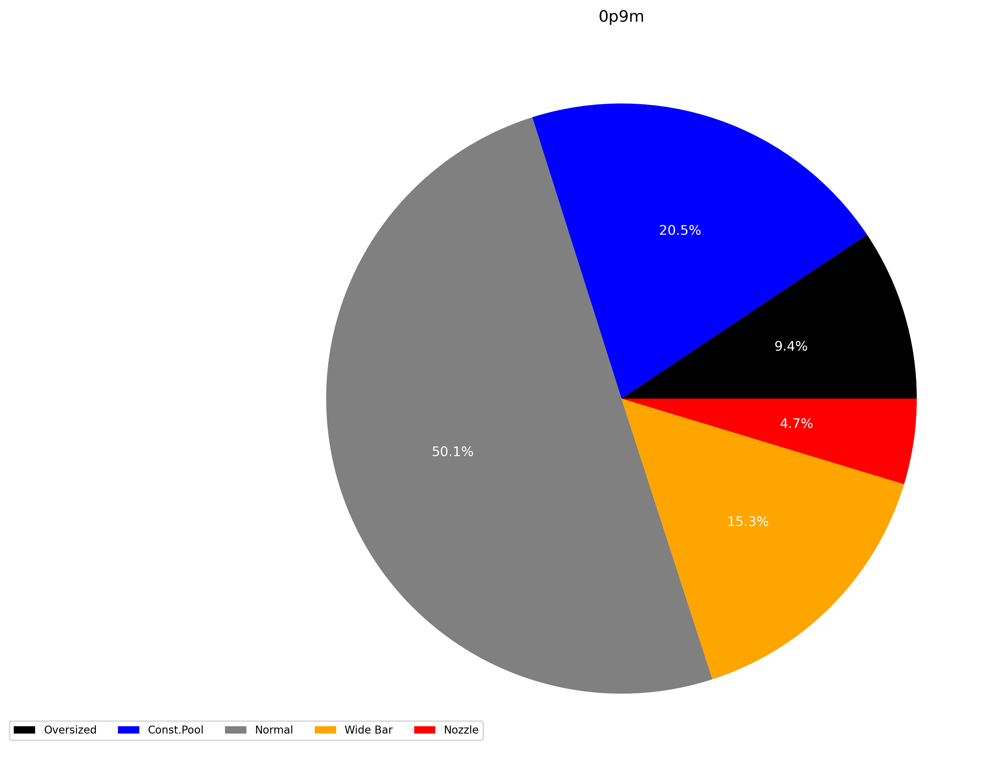

GCS stage analysis outputs
Methodology + motivation
Create plots displaying a rivers longitudinal channel geography.
Pull statistics for each flow stage of interest.
Explore the relationship between relative channel width (Ws) and bed elevation (Zs).
Assess the relative abundance of GCS landforms.
Outputs
Directory Location: By default all nesting analysis outputs are saved @ GCS_analysis_outputs/stage_analysis/.
Visual Outputs:
- Indivual plots showing Ws, Zs, and C(Ws, Zs) series for each key flow stage are produced, ex: stage_analysis/0p2m_gcs_plot.png
- 
- Heatplots visualizing the 2D distribution of cross-sectional paired Ws, Zs values for each flow stage, ex: stage_analysis/0p2m_heatplot.png
- 
- Pie charts showing relative Interpreting geomorphic landforms abundances, ex: stage_analysis/0p7m_landform_pie.png
- 
{kind=link}
{kind=link}
{kind=link}
Tabular Outputs:
An .xslx file showing descriptive statistics for each key flow stage in different sheets, ex: stage_analysis/stages_descriptive_stats.xlsx